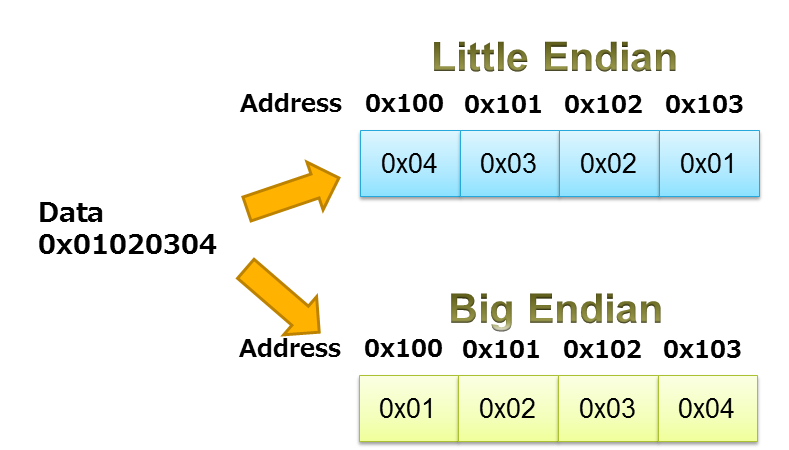

Hobby project
Smart bulb LAN protocol
LIFX smart bulb
LAN protocol
LIFX doesn't provide libraries...
...but they do provide the protocol description as text...
...and there are some implementations on github
Why?
Why not
Also, I wanted to learn some low level stuff
So I started working

But there were a few things I didn't understand
For example
The LAN Protocol utilizes UDP/IP. Numeric data-type byte-order is little-endian. Each message is composed of a header and a payload.
Protocol description example
| Field | Bits | Type | Description |
|---|---|---|---|
| Size | 16 | uint16_t |
Size of entire message in bytes including this field |
| Origin | 2 | uint8_t(?) |
Message origin indicator: must be zero (0) |
| Tagged | 1 | bool |
Determines usage of the Frame Address target field |
| Target | 64 | uint64_t(!) |
6 byte device address (MAC address) or zero (0) means all devices |
Result should be something like...
580000541001A8C0D073D513009B00004C49465856320000487821...
UDP vs TCP
"Internet is TCP"
Reliability, ordered,...
"Online gaming and streaming is UDP"
Throws out the error checking
UDP in Java
DatagramSocket socket = new DatagrapSocket(PORT);
DatagramPacket sendPacket = new DatagramPacket(buf[], length, address, PORT);
socket.send(sendPacket);
Endianness
Endianness
Signed vs Unsigned
ByteBuffer
Used for fast low-level IO.
Support for endianness.
ByteBuffer
.allocate(HEADER_LENGTH)
.order(ByteOrder.LITTLE_ENDIAN)
.putShort(size)
.putShort(getTagged());
Who am I?
Ortwin Joniaux
bpost (tech lead for the master data team)
https://github.com/ortwin45